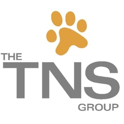

Alex Ginsberg
Software Engineer
Yext, Software Engineer
Tysons Corner, VA | March 2018 - Present
More to come...

The TNS Group, IT Client Services Intern
Stamford, CT | May 2016 - August 2016
- Assisted clients in resolving technology related issues over the phone and by remotely accessing clients’ computers, both Windows and Mac
- Delegated tasks to coworkers while on “dispatch” duty by communicating between clients and employees
- Managed collection of client information through various Microsoft Office products
- Prepared machines for clients via system imaging, allowing computers to be setup properly in mass quantities
- Traveled to client offices to assist in setting up machines
- Worked with IT related programs including LabTech, ConnectWise, and Active Directory
Strategies For Wealth, Investment Department Intern
Rye Brook, NY | May 2014 - August 2014
- Utilized the MorningStar Advisor Tool to aid advisors to generate reports and research securities
- Assisted the Investment Group in various projects including proposals and work with investment models
- Created Excel documents to organize client information
- Reached out to clients to fulfill their financial needs
- Worked as a part of a 7-person team, collaborating on various projects